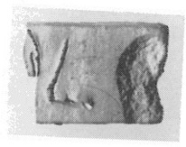
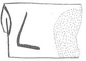

-
PYR2
Names
PYR2, PY R2
Support
Lames (short thin tablet)
Location
Pyrgos
Findspot
Unavailable


Scribe
Unavailable
Context
Unavailable
Dimensions
[1.80]
[2.70]
[0.50]
cm
GORILA OCR
Catalogue
HM 1681. Cablette
Hiraklion Museum
Readings
1 1 0 *304 doubtful
1 1 1 ¹⁄₂ certain
𐙘𐝆
*304¹⁄₂
𐙘𐝆
*304¹⁄₂
PYR 2
, page
tablet?/"lame"? cut top & bottom? (HM 1681)
(GORILA V: 59)
|
side.line
|
statement
|
logogram
|
number
|
fraction
|
|
|
|
]*
304
|
|
J
|
Commentary © John Younger
References
papers/GORILA-Vol5.pdf#page=113